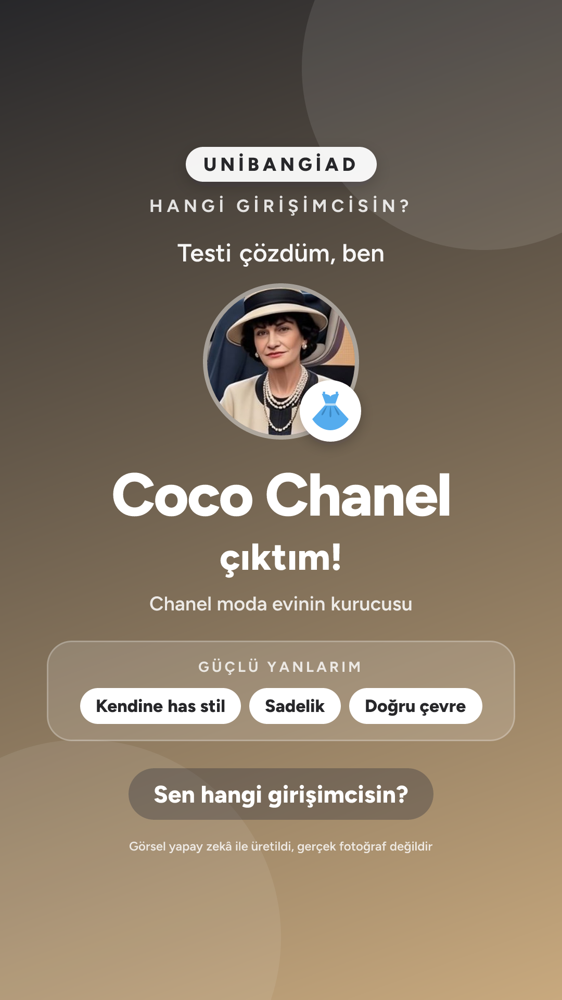

UNİBANGİAD
Sonucun
Coco Chanel
Chanel moda evinin kurucusu
“Sen modayı takip etmezsin; insanlar senin bir sonraki adımını takip eder.”
Görsel yapay zekâ ile üretilmiştir, gerçek bir fotoğraf değildir.
Görsel kaydedildi. Instagram'da yeni bir hikâye aç ve galeriden bu görseli seç.
Instagram'ı aç →
Senin profilin
Cevaplarının 7 eksende dağılımı.